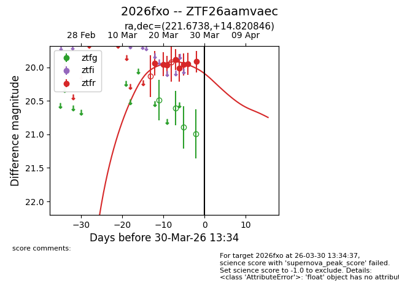
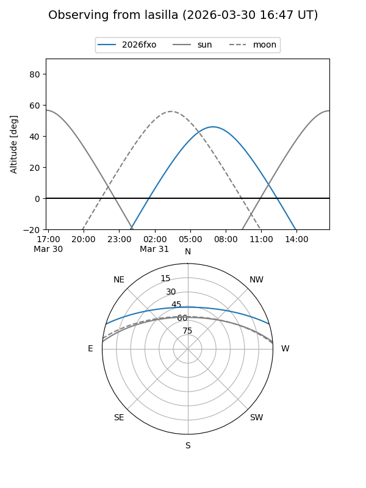
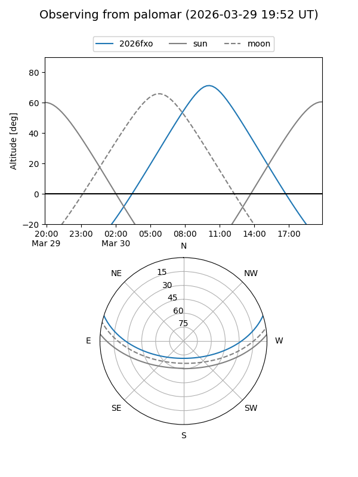
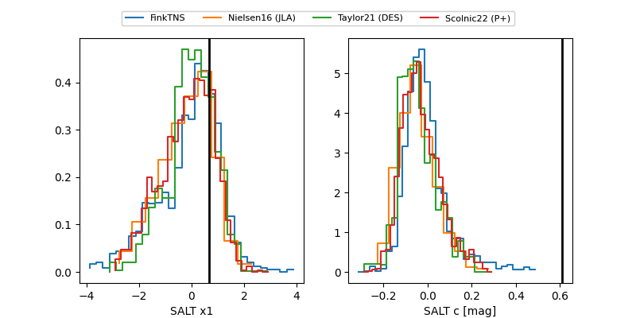

2026fxo
Target 2026fxo at 2026-03-30 13:38
Aliases and brokers:
FINK: link
Lasair: link
ALeRCE: link
TNS: link
YSE: link
alt names
ZTF26aamvaec (ztf,fink_ztf)
2026fxo (tns,yse)
Coordinates:
equatorial (ra, dec) = 221.6738,+14.82085
equatorial (HMS+DMS) = 14:46:41.72,+14:49:15.05
galactic (l, b) = (14.1364,+60.51575)
Flags:
Photometry:
last ztfr=19.92
8 ztfr detections
Lightcurve

Visibility


Additional plots
